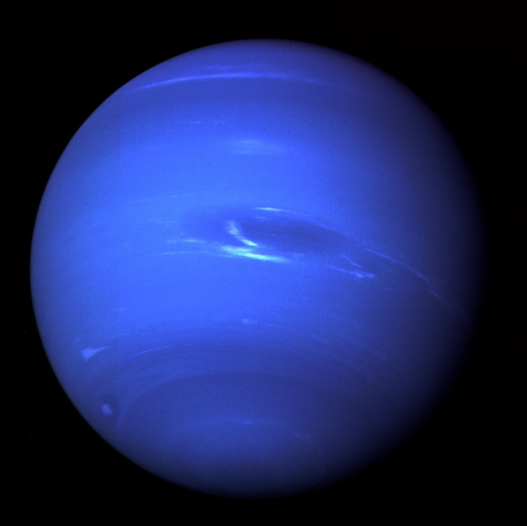

Odległość od Słońca w mln km: 4497
Okres obiegu wokół Słońca: 164,78 lat
Okres rotacji: 15 h 40 min
Średnica (km): 49530
Masa (Ziemia = 1): 17,2
Objętość (Ziemia = 1): 44
Gęstość (g/cm³): 1,77
Prędkość ruchu po orbicie (km/s): 5,4
Liczba znanych księżyców: 13
Neptun jest najbardziej odległą i najmniejszą planetą gazową. Okres obiegu wokół Słońca trwa blisko 165 lat, a porusza się ona ze średnią prędkością 5,4 km/s. Jądro Neptuna stanowi około 50% jego objętości i jest zbudowane ze skał i lodu. Otacza je amoniak i metan, co nadaje mu niebieskie zabarwienie. Prędkość wiatrów dochodzi do 2,5 tys. km/h. Występują tam również burze w formie wielkiej ciemnej plamy. Na jednym z księżyców Neptuna, lodowym Trytonie, odkryto także gejzery. Sonda Voyager 2 potwierdziła wcześniejsze przypuszczenia o istnieniu pierścieni wokół Neptuna. Na skutek oddziaływań z satelitami magnetosfera Neptuna ma zmienną geometrię.